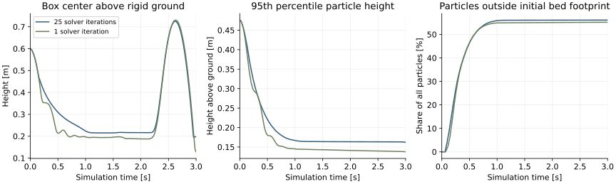
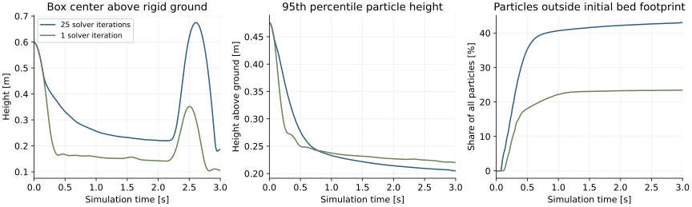
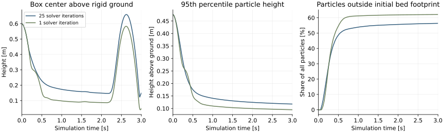

← Slide 51 · Earlier small-tray videos
New experiment setting: 1.0 × 1.0 × 0.5 m of material on a ground plane, without retaining walls. Six completed simulations use the supplied sand, snow and clay presets. Both panels are MPM simulations; no neural correction or analytical force estimator runs here.
Finding: one solver iteration does not reproduce the 25-iteration trajectories. All three materials show differences in deformation, box motion and contact force. The videos and measurements below quantify those differences. They do not establish which iteration count is sufficiently converged.
Sand · Snow · Clay · Exact material values · Download measurements and run settings
| Material | Particle position RMS difference [mm] | Box position RMS difference [mm] | Material-on-box force RMS difference [N] | Median physics time [ms/step] 1 / 25 iterations |
|---|---|---|---|---|
| Sand | 40.6 | 87.1 | 30.8 | 16.75 / 21.48 |
| Snow | 98.2 | 177.0 | 16.2 | 17.58 / 21.77 |
| Clay | 55.4 | 77.8 | 25.6 | 17.00 / 21.71 |
Position differences use Euclidean distance between corresponding particles or box centers. Particle results use 150 recorded states after initialization, sampled every 20 ms. Box positions use 600 states. Force differences use all 600 transitions and the three-component material force actually applied to the box. These are rollout differences, not one-step correction targets.
| Material | Maximum particle height [m] 1 / 25 iterations | Particles outside original 1 m × 1 m footprint [%] 1 / 25 iterations | Final box-center difference [mm] |
|---|---|---|---|
| Sand | 0.192 / 0.252 | 55.1 / 56.1 | 121.9 |
| Snow | 0.292 / 0.294 | 23.4 / 43.0 | 112.5 |
| Clay | 0.127 / 0.153 | 62.1 / 56.4 | 105.9 |
Spreading beyond the initial footprint is permitted: there are no walls. Maximum height can depend on isolated particles, so the plots also show the 95th percentile height. Every recorded particle state is finite. With 1 iteration, the peak share of particle centers below z = −0.02 m is 0.221% for snow and 1.193% for clay; sand stays above that threshold. With 25 iterations, all three materials stay above that threshold. This indicates a ground-contact limitation at the smaller iteration budget; it does not imply zero penetration with 25 iterations.
At 3 s, the maximum particle height above the ground is 0.192 m with 1 iteration and 0.252 m with 25 iterations. The box centers differ by 121.9 mm. These are independently evolving trajectories.
Download video · Contact-force profiles · Motion and material spreading

At 3 s, the maximum particle height above the ground is 0.292 m with 1 iteration and 0.294 m with 25 iterations. The box centers differ by 112.5 mm. These are independently evolving trajectories.
Download video · Contact-force profiles · Motion and material spreading

At 3 s, the maximum particle height above the ground is 0.127 m with 1 iteration and 0.153 m with 25 iterations. The box centers differ by 105.9 mm. These are independently evolving trajectories.
Download video · Contact-force profiles · Motion and material spreading

| Parameter | Unit | Sand | Snow | Clay |
|---|---|---|---|---|
| density | kg/m³ | 1600 | 250 | 1500 |
| young modulus | Pa | 1e+15 | 1e+15 | 1e+15 |
| friction | — | 0.48 | 0.3 | 0 |
| yield pressure | Pa | 1e+15 | 2e+06 | 1e+15 |
| tensile yield ratio | — | 0 | 0.05 | 1 |
| yield stress | Pa | 0 | 0 | 200 |
| hardening | — | 0 | 1 | 0 |
| dilatancy | — | 0 | 1 | 0.1 |
| viscosity | Pa s | 0 | 0 | 100 |
Poisson ratio is 0.3 for all three materials. The 1e15 Pa values are finite representations of the rigid elastic limit. These are the supplied presets, without fitted changes. The optional rigid preset is implemented but was not part of this six-run comparison.
The scene follows the ground-plane arrangement in Newton’s two-way MPM example. Its other simulation parameters are not copied. The simulation uses the isolated IsaacLab environment on horde_5080 and Newton’s original implicit MPM kernels, with Gauss–Seidel and exactly 1 or 25 contact/material solver iterations per step. Warm starts and material history remain active; early stopping is disabled.
Blue is 25 iterations; muted green is 1 iteration. Each panel uses its own particle positions and box motion. Force plots show material force and torque actually applied to the box through the previous MPM step’s coupling feedback. Ground reaction is the current force exerted by the rigid ground on the material. It is not the force acting on the box. The 3 s trajectories play at half speed, with the same camera for every material.
Timing measures one synchronized coupled physics step on RTX 5080, including rigid simulation, MPM and coupling. It excludes diagnostic readback, trajectory recording, action staging and rendering. There are 20 warmup steps and one measured 600-step rollout per case; no CUDA graph capture or repeated timing trials. Dynamic allocation and previously unused kernels may affect latency. Means, medians and 95th percentiles are in the downloadable measurements.
Implication for the hybrid model: the network would need to correct material deformation and transmitted contact forces, not only the visible box trajectory. These six rollouts identify differences to investigate; training requires low-iteration and higher-iteration solutions started from the same complete material state. Twenty-five iterations has not been certified as ground truth.